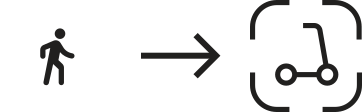
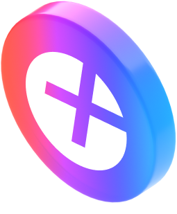
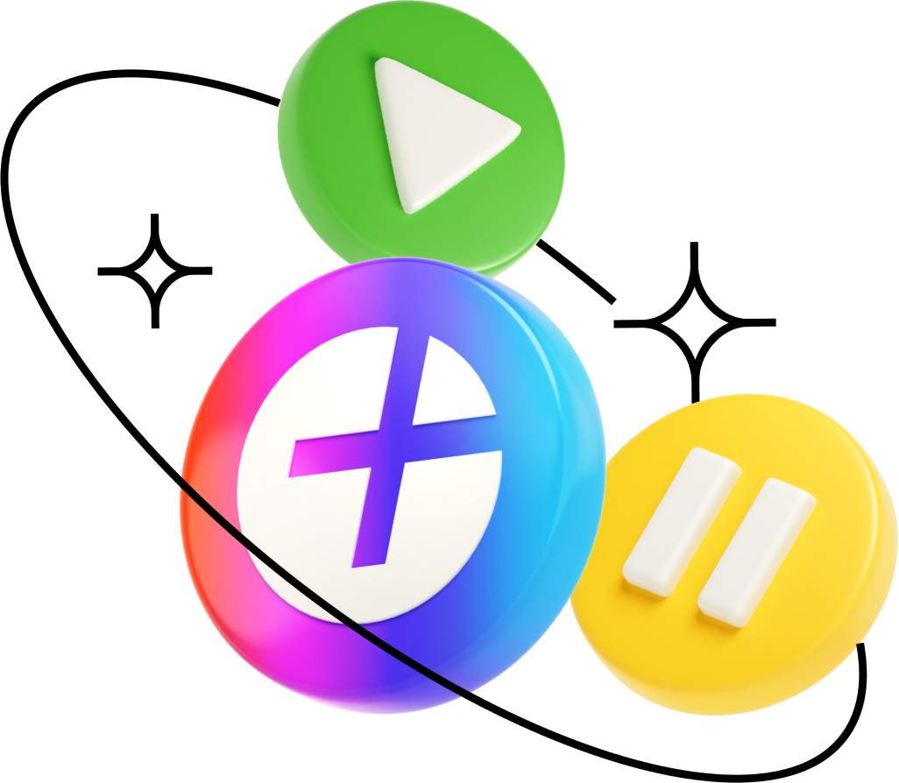

Тариф Фикс
Подойдет, если знаете точку назначения. Цена поездки фиксированная. Покажем её заранее.
Самокаты есть в Москве, Санкт-Питербурге, Краснодаре и Туле
В Яндекс Go нажмите кнопку Самокаты
Найдите на карте ближайшую парковку

Дойдите до самоката и отсканируйте QR-код на руле
Готово! Выбирайте тариф и можно ехать
Подойдет, если знаете точку назначения. Цена поездки фиксированная. Покажем её заранее.
Для прогулок по городу.
Аренда: от 50 рублей + тариф
от 7 рублей в минуту.
Нужна, чтобы забронировать с одного телефона до трёх самокатов одновременно. Да, и такое бывает
Ninebot Max Plus 2022 года выпуска. Красив и функционален. На его борту есть держатель для телефона с беспроводной зарядкой.
За 30 минут поездки зарядим ваш девайс на 40%

Вернем 5% кешбэка баллами Плюса за каждую поездку. Кешбэк можно тратить
в сервисах Яндекса

Если вы часто ездите по городу на самокатах, выгоднее будет с абонементом. Его можно купить, только если у вас
есть Яндекс Плюс. Абонемент бесплатный на первый месяц,
за второй месяц вернём 399 ₽ баллами Плюса. Вот
какие
бонусы он даёт:
0₽ в любом тарифе и даже в групповой поездке, вместо 50₽ за каждую поездку
до 15 минут за 0₽ вместо 3,5₽ за минуту
А с опцией «Ещё один самокат» можно забронировать самокат для друга
Если только учитесь кататься, не повредит и другая защита
Это правило справедливо для любого транспорта
То же с бордюрами и ступеньками
Вы тоже один из них
Вы можете взять самокат, если вам уже исполнилось 18 лет
Во время поездки на самокате действует страхование жизни и здоровья — вашей
и окружающих. Если во
время
катания что-то произошло, сразу же напишите
в поддержку
Самокаты постепенно появляются в разных районах Москвы. Карта в приложении покажет, где взять самокат — и на какой парковке его можно оставить

Наведите камеру на QR-код для загрузки приложения